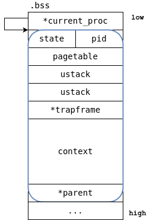

静态链接¶
在本次实验中，我们将了解静态链接和C语言中的地址分配是如何工作的。
理解 uCore 是如何构建的¶
当我们在 uCore 目录下执行 make 编译内核时，我们可以观察 make 工具是如何调用编译工具链的：
$ make
riscv64-unknown-elf-gcc {Compiler_Flags} -c os/console.c -o build/os/console.o
riscv64-unknown-elf-gcc {Compiler_Flags} -c os/kalloc.c -o build/os/kalloc.o
riscv64-unknown-elf-gcc {Compiler_Flags} -c os/loader.c -o build/os/loader.o
riscv64-unknown-elf-gcc {Compiler_Flags} -c os/main.c -o build/os/main.o
riscv64-unknown-elf-gcc {Compiler_Flags} -c os/printf.c -o build/os/printf.o
riscv64-unknown-elf-gcc {Compiler_Flags} -c os/proc.c -o build/os/proc.o
riscv64-unknown-elf-gcc {Compiler_Flags} -c os/queue.c -o build/os/queue.o
riscv64-unknown-elf-gcc {Compiler_Flags} -c os/sbi.c -o build/os/sbi.o
riscv64-unknown-elf-gcc {Compiler_Flags} -c os/string.c -o build/os/string.o
riscv64-unknown-elf-gcc {Compiler_Flags} -c os/syscall.c -o build/os/syscall.o
riscv64-unknown-elf-gcc {Compiler_Flags} -c os/timer.c -o build/os/timer.o
riscv64-unknown-elf-gcc {Compiler_Flags} -c os/trap.c -o build/os/trap.o
riscv64-unknown-elf-gcc {Compiler_Flags} -c os/vm.c -o build/os/vm.o
riscv64-unknown-elf-gcc {Compiler_Flags} -c os/entry.S -o build/os/entry.o
riscv64-unknown-elf-gcc {Compiler_Flags} -c os/switch.S -o build/os/switch.o
riscv64-unknown-elf-gcc {Compiler_Flags} -c os/trampoline.S -o build/os/trampoline.o
riscv64-unknown-elf-gcc {Compiler_Flags} -c os/link_app.S -o build/os/link_app.o
riscv64-unknown-elf-ld -z max-page-size=4096 -T os/kernel.ld -o build/kernel build/os/console.o build/os/kalloc.o build/os/loader.o build/os/main.o build/os/printf.o build/os/proc.o build/os/queue.o build/os/sbi.o build/os/string.o build/os/syscall.o build/os/timer.o build/os/trap.o build/os/vm.o build/os/entry.o build/os/switch.o build/os/trampoline.o build/os/link_app.o
riscv64-unknown-elf-objcopy -O binary build/kernel build/kernel.bin
riscv64-unknown-elf-objdump -S build/kernel > build/kernel.asm
riscv64-unknown-elf-objdump -t build/kernel | sed '1,/SYMBOL TABLE/d; s/ .* / /; /^$/d' > build/kernel.sym
Build kernel done
首先，make 会调用 gcc 对所有的 .c 和 .S 源代码进行编译 (-c xxx.c)，生成 .o 的 Relocatable object file (-o xxx.o)。 然后，make 会调用 ld 链接所有的 .o 文件，并且指定了使用 os/kernel.ld 作为链接脚本，生成内核的 ELF 文件 kernel (-o build/kernel)。
链接脚本 (Linker Script) 指定了链接器 ld 应该如何排布所有 Object File 中的符号，并生成最终的 ELF 文件。
OUTPUT_ARCH(riscv)
ENTRY(_entry)
BASE_ADDRESS = 0x80200000;
SECTIONS
{
. = BASE_ADDRESS;
skernel = .;
s_text = .;
.text : {
*(.text.entry)
*(.text .text.*)
. = ALIGN(0x1000);
*(trampsec)
. = ALIGN(0x1000);
}
. = ALIGN(4K);
e_text = .;
s_rodata = .;
.rodata : {
*(.rodata .rodata.*)
}
. = ALIGN(4K);
e_rodata = .;
s_data = .;
.data : {
*(.data.apps)
*(.data .data.*)
*(.sdata .sdata.*)
}
. = ALIGN(4K);
e_data = .;
.bss : {
*(.bss.stack)
s_bss = .;
*(.bss .bss.*)
*(.sbss .sbss.*)
}
. = ALIGN(4K);
e_bss = .;
ekernel = .;
/DISCARD/ : {
*(.eh_frame)
}
}
在 Linker Script 中，我们首先指定了输出 ELF 的架构是 RISC-V 架构，入口函数为 _entry 符号，并定义了 ELF 的基地址为 0x80200000。
在后续的 SECTIONS 中，我们首先指定了当前位置为 BASE_ADDRESS：. = BASE_ADDRESS;，并定义了 skernel 这个符号指向当前地址。
然后，我们指定了如何排布 text, rodata, data, bss 等 Section，并在不同的 Section 之间使用 . = ALIGN(4K) 确保Section的开始地址对齐到了 4096 bytes 的边界。我们也指定了 skernel、s_text、e_text 等符号的值，这些值在后续内核中初始化内核的页表中会被使用到。
例如，我们在 .text 段中首先包含了一个特殊的 Section .text.entry，这个 section 是在 entry.S 文件中定义的：
我们在 entry.S 文件中指定 _entry 符号应该被放置到 .text.entry 段，并在链接脚本中指定这个段为内核的开始地址。这样我们即可确保 _entry 会被放置到内核起始地址。当我们启动内核时，我们会从这个起始地址开始执行，也就是执行了内核的第一条指令。
我们可以通过反编译 build/kernel 来观察这一点：
$ riscv64-linux-gnu-objdump -d build/kernel
Disassembly of section .text:
0000000080200000 <_entry>:
80200000: 0000100f fence.i
80200004: 18001073 csrw satp,zero
80200008: 00094117 auipc sp,0x94
8020000c: ff810113 addi sp,sp,-8 # 80294000 <idle>
80200010: 00001097 auipc ra,0x1
80200014: a80080e7 jalr -1408(ra) # 80200a90 <main>
理解编译器和链接器¶
推荐阅读：CSAPP Chapter 7: Linking
在进行这一小节的学习前，我们非常建议你阅读 CSAPP 中的第7章 链接。
我们将通过一个简单的 printf 例子来说明静态链接中，链接器是如何为不同的符号分配地址的，以及从汇编分析代码是如何得到符号的地址 (Addressing)。
在计算机的世界中，所有变量、外设均是内存地址访问的，CPU 只不过是在不同的内存地址上将数据来回搬运而已。所以，我们有必要了解在汇编代码中，CPU 是如何得到某个对象的内存地址的。
下面这个例子 (lab1-1.c) 定义了一个全局变量 a，一个 main 的栈上变量 b，一个 recursive 的栈上变量 c，并打印它们的地址。
#include <stdio.h>
int a = 0;
void recursive(int depth) {
int c;
if (depth == 5) return;
printf("[%d] c is at: %p\n", depth, &c);
recursive(depth + 1);
}
int main() {
int b;
printf("main is at: %p\n", &main);
printf("a is at: %p\n", &a);
printf("b is at: %p\n", &b);
recursive(0);
}
我们使用 riscv64-linux-gnu-gcc -O0 -g -static -march=rv64g -Wl,--no-relax lab1-1.c 编译它。-O0 表示禁用任何编译器优化；-g 表示生成的 ELF 文件带上调试信息，方便 objdump 时附带上源代码；-static 表示生成静态链接的 ELF 文件；-march=rv64g 阻止了编译器生成 RISC-V Compressed 短指令。
我们运行编译产物：
$ ./a.out
main is at: 0x105e0
a is at: 0x7e8d8
b is at: 0x7f2c6f5ffb2c
[0] c is at: 0x7f2c6f5ffb0c
[1] c is at: 0x7f2c6f5ffadc
[2] c is at: 0x7f2c6f5ffaac
[3] c is at: 0x7f2c6f5ffa7c
[4] c is at: 0x7f2c6f5ffa4c
我们可以看到，main的地址是 0x105e0，a的地址是 0x7e8d8 ，而 b 与 c 的地址是以 0x7f 开头的。
多次运行 a.out 可以发现，main 和 a 的地址是固定的，而 b 和 c 的地址均以 0x7f 开头，但是不是固定的，并且，五个 c 的地址之间均相差固定的 0x30。
这是因为编译器将 main 放置到了 .text 段，a 放置到了程序的 .data 段，这两个符号拥有固定的地址；而 b 与 c 则是在程序的栈上分配的。
反汇编 a.out¶
我们通过 objdump 工具查看编译产物 a.out 中 main 符号的汇编代码，--disassemble=main 表示只反汇编 main 符号，-S 表示在反汇编上标注对应的源代码。
$ riscv64-linux-gnu-objdump --disassemble=main -S a.out
a.out: file format elf64-littleriscv
Disassembly of section .text:
00000000000105e0 <main>:
int main() {
105e0: fe010113 addi sp,sp,-32
105e4: 00113c23 sd ra,24(sp)
105e8: 00813823 sd s0,16(sp)
105ec: 02010413 addi s0,sp,32
int b;
printf("main is at: %p\n", &main);
105f0: 00000597 auipc a1,0x0
105f4: ff058593 addi a1,a1,-16 # 105e0 <main>
105f8: 0003f517 auipc a0,0x3f
105fc: 63850513 addi a0,a0,1592 # 4fc30 <__rseq_flags+0x1c>
10600: 1ad000ef jal 10fac <_IO_printf>
printf("a is at: %p\n", &a);
10604: 84018593 addi a1,gp,-1984 # 7e8d8 <a>
10608: 0003f517 auipc a0,0x3f
1060c: 63850513 addi a0,a0,1592 # 4fc40 <__rseq_flags+0x2c>
10610: 19d000ef jal 10fac <_IO_printf>
printf("b is at: %p\n", &b);
10614: fec40793 addi a5,s0,-20
10618: 00078593 mv a1,a5
1061c: 0003f517 auipc a0,0x3f
10620: 63450513 addi a0,a0,1588 # 4fc50 <__rseq_flags+0x3c>
10624: 189000ef jal 10fac <_IO_printf>
recursive(0);
10628: 00000513 li a0,0
1062c: f45ff0ef jal 10570 <recursive>
10630: 00000793 li a5,0
10634: 00078513 mv a0,a5
10638: 01813083 ld ra,24(sp)
1063c: 01013403 ld s0,16(sp)
10640: 02010113 addi sp,sp,32
10644: 00008067 ret
输出的第一行告诉我们 a.out 文件的格式是 elf64-littleriscv，这代表这是一个 64 位 ELF 文件，架构为 RISC-V 小端序。第二行表示我们正在反汇编其中的 .text 段。
我们可以看到，在 10600、10610 和 10624 处，分别有三次 jal 10fac <_IO_printf>，这表示调用了 printf 函数，而 printf 函数地址为 0x10fac。
汇编中的寻址¶
在这一小节，我们主要探讨在汇编层面上，编译器是如何生成汇编指令来找到某个符号的地址的。
在上述程序调用 printf 时，我们传入了两个参数，第一个参数是一个字符串常量，第二个参数是某个变量的地址。
根据 jal 指令前的指令序列，我们可以推测 jal printf 前的寄存器值。并且，根据 RISC-V 架构下的函数调用约定 (Calling Convention, 前 8 个整数参数通过 a0-a7 传递)，我们可以得到调用 printf 的具体参数：
# 第一次：
105f0: 00000597 auipc a1,0x0
105f4: ff058593 addi a1,a1,-16 # 105e0 <main>
105f8: 0003f517 auipc a0,0x3f
105fc: 63850513 addi a0,a0,1592 # 4fc30 <__rseq_flags+0x1c>
# a0 = 0x4fc30, a1 = 0x105e0
# printf(0x4fc30, 0x105e0)
10600: 1ad000ef jal 10fac <_IO_printf>
# 第二次：
10604: 84018593 addi a1,gp,-1984 # 7e8d8 <a>
10608: 0003f517 auipc a0,0x3f
1060c: 63850513 addi a0,a0,1592 # 4fc40 <__rseq_flags+0x2c>
# a0 = 0x4fc40, a1 = 0x7e8d8
# printf(0x4fc40, 0x7e8d8)
10610: 19d000ef jal 10fac <_IO_printf>
auipc
AUIPC (add upper immediate to pc) is used to build pc-relative addresses and uses the U-type format. AUIPC appends 12 low-order zero bits to the 20-bit U-immediate, sign-extends the result to 64 bits, then adds it to the pc and places the result in register rd.
AUIPC 是 RISC-V 中实现 PC-Relative Addressing (PC相对寻址) 的方式。AUIPC 会将 20 位的立即数左移 12 位，符号扩展后加上 pc 寄存器的值，并保存到指定的 rd 寄存器中。
例如，auipc a1,0x0，将 pc (0x105f0) 加上 0x0，存入 a1 中。addi a1,a1,-16 将 a1 减去 0x01，得到 0x105e0，即 main 的地址。
根据 printf 的定义: int printf(const char *restrict format, ...);，第一个参数 a0 应该是格式化字符串，我们可以通过 objdump 观察指定地址处的值来验证这一点：
$ riscv64-linux-gnu-objdump -s --start-address=0x4fc30 --stop-address=0x4fc60
a.out: file format elf64-littleriscv
Contents of section .rodata:
4fc30 6d61696e 20697320 61743a20 25700a00 main is at: %p..
4fc40 61206973 2061743a 2025700a 00000000 a is at: %p.....
4fc50 62206973 2061743a 2025700a 00000000 b is at: %p.....
objdump 的输出中，最左侧是内存地址 4fc30，后面跟随的是该地址上0x10 (32) bytes 的二进制内容，而最后是这些二进制内容的 ASCII 解码。
objdump 的结果表示，0x4fc30 到 0x4fc60 是 .rodata 段的内容；地址 0x4fc30 处是一个 NULL-terminated 的字符串 main is at: %p..，这正是我们第一次调用 printf 时指定的格式化字符串。
第二个参数 a1 则分别是 0x105e0 和 0x7e8d8，它们分别是 main 和 a 的地址。我们可以发现，它们分别是通过 auipc + addi 和 addi a1,gp,xxx 计算出来的。
寻址 (Addressing)
寻址模式表示了如何计算内存地址，在 RISC-V 中，寻址模式 (Addressing Mode) 有以下几种：
- PC-relative: auipc, jal, branch 等指令，通过当前指令的 PC 值加上一个偏移量得到
- Register-offset: jalr, ld, sw 等所有访存指令，通过某个寄存器的值加上一个偏移量得到
- Absolute: lui 指令，直接通过立即数得到地址
我们发现，RISC-V 编译器通常会使用 auipc + addi 的方式使用 PC-Relative 来得到目标符号的地址。
符号解析¶
我们在之前编译 lab1-1.c 时，使用了 gcc 直接编译。实际上 gcc 会进行编译并链接。现在，我们在编译 lab1-1.c 时加入 -c 参数，告诉 gcc 只要进行编译而不进行链接，这一步会生成Relocatable Object file lab1-1.o
我们使用 llvm-readelf 工具解析编译产物 lab1-1.o：
$ llvm-readelf-17 --all lab1-1.o
ELF Header:
Magic: 7f 45 4c 46 02 01 01 00 00 00 00 00 00 00 00 00
Class: ELF64
Data: 2's complement, little endian
Version: 1 (current)
OS/ABI: UNIX - System V
ABI Version: 0
Type: REL (Relocatable file)
Machine: RISC-V
Version: 0x1
Entry point address: 0x0
Start of program headers: 0 (bytes into file)
Start of section headers: 6856 (bytes into file)
Flags: 0x4, double-float ABI
Size of this header: 64 (bytes)
Size of program headers: 0 (bytes)
Number of program headers: 0
Size of section headers: 64 (bytes)
Number of section headers: 23
Section header string table index: 22
There are 23 section headers, starting at offset 0x1ac8:
Section Headers:
[Nr] Name Type Address Off Size ES Flg Lk Inf Al
[ 0] NULL 0000000000000000 000000 000000 00 0 0 0
[ 1] .text PROGBITS 0000000000000000 000040 0000f4 00 AX 0 0 4
[ 2] .rela.text RELA 0000000000000000 000fb8 000390 18 I 20 1 8
[ 3] .data PROGBITS 0000000000000000 000134 000000 00 WA 0 0 1
[ 4] .bss NOBITS 0000000000000000 000134 000004 00 WA 0 0 4
[ 5] .rodata PROGBITS 0000000000000000 000138 000045 00 A 0 0 8
[ 6] .debug_info PROGBITS 0000000000000000 00017d 000108 00 0 0 1
[ 7] .rela.debug_info RELA 0000000000000000 001348 000288 18 I 20 6 8
[ 8] .debug_abbrev PROGBITS 0000000000000000 000285 0000c8 00 0 0 1
[ 9] .debug_aranges PROGBITS 0000000000000000 00034d 000030 00 0 0 1
[10] .rela.debug_aranges RELA 0000000000000000 0015d0 000060 18 I 20 9 8
[11] .debug_line PROGBITS 0000000000000000 00037d 0000a3 00 0 0 1
[12] .rela.debug_line RELA 0000000000000000 001630 0002d0 18 I 20 11 8
[13] .debug_str PROGBITS 0000000000000000 000420 0000e9 01 MS 0 0 1
[14] .debug_line_str PROGBITS 0000000000000000 000509 00009e 01 MS 0 0 1
[15] .comment PROGBITS 0000000000000000 0005a7 00001f 01 MS 0 0 1
[16] .note.GNU-stack PROGBITS 0000000000000000 0005c6 000000 00 0 0 1
[17] .eh_frame PROGBITS 0000000000000000 0005c8 000068 00 A 0 0 8
[18] .rela.eh_frame RELA 0000000000000000 001900 0000f0 18 I 20 17 8
[19] .riscv.attributes RISCV_ATTRIBUTES 0000000000000000 000630 000061 00 0 0 1
[20] .symtab SYMTAB 0000000000000000 000698 0007c8 18 21 79 8
[21] .strtab STRTAB 0000000000000000 000e60 000156 00 0 0 1
[22] .shstrtab STRTAB 0000000000000000 0019f0 0000d2 00 0 0 1
Key to Flags:
W (write), A (alloc), X (execute), M (merge), S (strings), I (info),
L (link order), O (extra OS processing required), G (group), T (TLS),
C (compressed), x (unknown), o (OS specific), E (exclude),
R (retain), p (processor specific)
我们可以注意到以下几点：
-
ELF Header 中的 Type 是
REL (Relocatable file)，这表示这是一个可重定位文件。 -
ELF 文件中一共有 23 个 Section，每个 Section 都有自己的名字 (Name)、类型 (Type)、地址 (Address)、在 ELF 文件中的偏移量 (Off)、大小 (Size) 和 Flag
-
Flag 中标志了每个 Section 的一些属性，例如
A (alloc)、W (write)、X (execute)。A (alloc)表示在加载 ELF 时，这个 Section 应该被分配内存并加载。而W与X则表示段是否可写和可执行。 -
我们发现了常见的
.text段，它是 AX ：需要被加载、可执行的。.data段和.bss段是 AW 的：需要被加载、可写的。而.rodata是近需要被加载的，不可写和不可执行的。 -
我们发现有一个特殊的 Section
.symtab，它存储着这个 Relocatable file 的 Symbol Table 符号表。
符号表是连接编译器和链接器的重要数据结构，我们进一步观察 lab1-1.o 的符号表：
$ llvm-readelf-17 --symbols lab1-1.o
Symbol table '.symtab' contains 83 entries:
Num: Value Size Type Bind Vis Ndx Name
0: 0000000000000000 0 NOTYPE LOCAL DEFAULT UND
1: 0000000000000000 0 FILE LOCAL DEFAULT ABS lab1-1.c
2: 0000000000000000 0 SECTION LOCAL DEFAULT 1 .text
3: 0000000000000000 0 SECTION LOCAL DEFAULT 3 .data
4: 0000000000000000 0 SECTION LOCAL DEFAULT 4 .bss
5: 0000000000000000 0 SECTION LOCAL DEFAULT 5 .rodata
...
79: 0000000000000000 4 OBJECT GLOBAL DEFAULT 4 a
80: 0000000000000000 120 FUNC GLOBAL DEFAULT 1 recursive
81: 0000000000000000 0 NOTYPE GLOBAL DEFAULT UND printf
82: 0000000000000078 124 FUNC GLOBAL DEFAULT 1 main
符号表中有 83 条 Symbol，每一条均有一个值、大小、类型、可见域 (Bind)、名字 (Name)，除此之外，Ndx 一列表示了这个符号是属于哪个 Section 的。
例如，main 和 recursize 是两个函数，所以它们的类型是 FUNC，Ndx 为 1，表明它属于 Section Headers 中的 1 号 Section .text。
a 是一个未被初始化的 int 变量，所以它的类型是 OBJECT，所属于 .bss 段，大小为 4 个字节。
特别的，我们在代码中引用了外部符号 (没有在 lab1-1.c 中定义) printf，它的 Ndx 是 UND (表明这个符号被该文件引用了，但是没有在该文件中被定义)，并且我们也不知道它的类型。
链接器会读取所有要链接的 .o 文件的符号表，结合所有被定义的符号，和被引用的外部符号。这一步被成为符号解析 (Symbol Resolution)。
符号重定位¶
我们使用 objdump 观察生成的 lab1-1.o 文件。
$ riscv64-linux-gnu-objdump --disassemble=main -S lab1-1.o
Disassembly of section .text:
0000000000000078 <main>:
int main() {
78: fe010113 addi sp,sp,-32
7c: 00113c23 sd ra,24(sp)
80: 00813823 sd s0,16(sp)
84: 02010413 addi s0,sp,32
int b;
printf("main is at: %p\n", &main);
88: 00000597 auipc a1,0x0
8c: 00058593 mv a1,a1
90: 00000517 auipc a0,0x0
94: 00050513 mv a0,a0
98: 00000097 auipc ra,0x0
9c: 000080e7 jalr ra # 98 <main+0x20>
printf("a is at: %p\n", &a);
a0: 00000597 auipc a1,0x0
a4: 00058593 mv a1,a1
a8: 00000517 auipc a0,0x0
ac: 00050513 mv a0,a0
b0: 00000097 auipc ra,0x0
b4: 000080e7 jalr ra # b0 <main+0x38>
printf("b is at: %p\n", &b);
我们对比 a.out 和 lab1-1.o 中第一次 printf 时的汇编代码：
# lab1-1.o:
88: 00000597 auipc a1,0x0
8c: 00058593 mv a1,a1
90: 00000517 auipc a0,0x0
94: 00050513 mv a0,a0
98: 00000097 auipc ra,0x0
9c: 000080e7 jalr ra # 98 <main+0x20>
# a.out:
105f0: 00000597 auipc a1,0x0
105f4: ff058593 addi a1,a1,-16 # 105e0 <main>
105f8: 0003f517 auipc a0,0x3f
105fc: 63850513 addi a0,a0,1592 # 4fc30 <__rseq_flags+0x1c>
10600: 1ad000ef jal 10fac <_IO_printf>
我们可以看到，lab1-1.o 中，auipc 和 mv 指令中的立即数均为 0。这是因为编译器并不知道这些符号 (main函数、printf函数、变量a等) 将会被链接器安排到什么地址，所以编译器只能摆烂，生成了一些占位指令，并生成了一些 Relocation 信息，将最终确认地址的任务留给了链接器处理。
在静态链接中，函数的地址和全局变量的地址在链接阶段被确定。链接器会根据 Linker Script 合并所有 object 文件中的所有符号，并为其分配地址。 在分配地址结束后，链接器会根据编译器生成的汇编代码，在指定汇编代码的位置填入立即数，以确保这些寻址代码能正确的找到它们所引用的符号。这一步被成为 Relocation 重定位。
在 lab1-1.o 中，main 的地址是 0x0078，而最终的可执行文件中，main 的地址是 0x105e0。这是因为链接器完成了对 lab1-1.o 中 main 函数的重定位，也就是说，main 函数最终被重定位到了 0x105e0。并且，printf 的第一个参数，格式化字符串也被正确定位了 (0x4fc30)。
我们使用 readelf 工具查阅 lab1-1.o 文件的信息，我们发现 .rela.text 段中有以下信息：
$ llvm-readelf-17 --relocs lab1-1.o
Relocation section '.rela.text' at offset 0xfb8 contains 38 entries:
Offset Info Type Symbol's Value Symbol's Name + Addend
0000000000000088 0000005200000017 R_RISCV_PCREL_HI20 0000000000000078 main + 0
0000000000000098 0000005100000013 R_RISCV_CALL_PLT 0000000000000000 printf + 0
这表示了在 lab1-1.o 汇编的 0x88 处引用了 main 符号的地址，并在 0x98 处调用了 printf 函数，这与我们观察到 lab1-1.o 中的汇编行为相符合。链接器需要处理这些 Relocation 信息并最终生成最后的 a.out 文件。
总结¶
综上，在静态链接中，链接器主要完成了两件事情：
-
解析符号：确定 object 文件中引用的 Symbol 具体为哪个
-
重定位：重定位 object 文件中的段，并重定位其中对 Symbol 的引用
在第二步中，ld 会根据 Linker Script 指示进行重定位，所有函数、全局变量，均拥有了自己所属的空间以及其地址。
Ex: libc¶
main.c 中并没有定义 printf 函数，它在头文件 stdio.h 中被声明了。
但是，我们在链接时也并没有额外指定其他 .o 文件。这是因为 printf 是 C 标准库 (libc) 的一部分，而默认的链接参数中均会链接上 libc。
我们在编译链接 lab1-1.o 时，使用 -Wl,-v 显示链接器 ld 的具体参数：
$ riscv64-linux-gnu-gcc -O0 -g -static -march=rv64g lab1-1.o -Wl,-v
collect2 version 14.2.0
/usr/lib/gcc-cross/riscv64-linux-gnu/14/../../../../riscv64-linux-gnu/bin/ld -plugin /usr/libexec/gcc-cross/riscv64-linux-gnu/14/liblto_plugin.so -plugin-opt=/usr/libexec/gcc-cross/riscv64-linux-gnu/14/lto-wrapper -plugin-opt=-fresolution=/tmp/cc0dIN9b.res -plugin-opt=-pass-through=-lgcc -plugin-opt=-pass-through=-lgcc_eh -plugin-opt=-pass-through=-lc --sysroot=/ --build-id -hash-style=gnu --as-needed -melf64lriscv -X -static /usr/lib/gcc-cross/riscv64-linux-gnu/14/../../../../riscv64-linux-gnu/lib/crt1.o /usr/lib/gcc-cross/riscv64-linux-gnu/14/crti.o /usr/lib/gcc-cross/riscv64-linux-gnu/14/crtbeginT.o -L/usr/lib/gcc-cross/riscv64-linux-gnu/14 -L/usr/lib/gcc-cross/riscv64-linux-gnu/14/../../../../riscv64-linux-gnu/lib -L/lib/riscv64-linux-gnu -L/usr/lib/riscv64-linux-gnu lab1-1.o -v --start-group -lgcc -lgcc_eh -lc --end-group /usr/lib/gcc-cross/riscv64-linux-gnu/14/crtend.o /usr/lib/gcc-cross/riscv64-linux-gnu/14/crtn.o
GNU ld (GNU Binutils for Debian) 2.43.1
其中包含了 -L/usr/lib/gcc-cross/riscv64-linux-gnu/14 指定了链接该目录下面的某些 Object 文件，--start-group -lgcc -lgcc_eh -lc --end-group 表示了链接 libc 库。
我们可以使用 -nostdlib 来禁止链接标准库：
$ riscv64-linux-gnu-gcc -O0 -g -static -march=rv64g lab1-1.o -Wl,-v -nostdlib
collect2 version 14.2.0
/usr/lib/gcc-cross/riscv64-linux-gnu/14/../../../../riscv64-linux-gnu/bin/ld -plugin /usr/libexec/gcc-cross/riscv64-linux-gnu/14/liblto_plugin.so -plugin-opt=/usr/libexec/gcc-cross/riscv64-linux-gnu/14/lto-wrapper -plugin-opt=-fresolution=/tmp/cceuW8LP.res --sysroot=/ --build-id -hash-style=gnu --as-needed -melf64lriscv -X -static -L/usr/lib/gcc-cross/riscv64-linux-gnu/14 -L/usr/lib/gcc-cross/riscv64-linux-gnu/14/../../../../riscv64-linux-gnu/lib -L/lib/riscv64-linux-gnu -L/usr/lib/riscv64-linux-gnu lab1-1.o -v
GNU ld (GNU Binutils for Debian) 2.43.1
/usr/lib/gcc-cross/riscv64-linux-gnu/14/../../../../riscv64-linux-gnu/bin/ld: warning: cannot find entry symbol _start; defaulting to 000000000001017c
/usr/lib/gcc-cross/riscv64-linux-gnu/14/../../../../riscv64-linux-gnu/bin/ld: lab1-1.o: in function `recursive':
lab1-1.c:8:(.text+0x40): undefined reference to `printf'
/usr/lib/gcc-cross/riscv64-linux-gnu/14/../../../../riscv64-linux-gnu/bin/ld: lab1-1.o: in function `main':
lab1-1.c:14:(.text+0x94): undefined reference to `printf'
/usr/lib/gcc-cross/riscv64-linux-gnu/14/../../../../riscv64-linux-gnu/bin/ld: lab1-1.c:15:(.text+0xac): undefined reference to `printf'
/usr/lib/gcc-cross/riscv64-linux-gnu/14/../../../../riscv64-linux-gnu/bin/ld: lab1-1.c:16:(.text+0xc4): undefined reference to `printf'
collect2: error: ld returned 1 exit status
我们可以观察到，尽管 ld 被指定了一些链接目录 -L 但是没有指定 -lc。因此 ld 报错了 undefined reference，提示找不到 printf 这个符号。
结构体¶
C 语言中，结构体是对一些数据的表示。(A structure is a programmer-defined data type made up of variables of other data types (possibly including other structure types).)
我们通过 struct 关键字声明一个结构体。
通常，我们将一些相关联的数据放置在同一个结构体上。
结构体有着编译期就已知的固定大小。通常来说，结构体中的变量会依次在内存中排布，但是变量之间可能会存在一些 Padding，确保结构体中的变量被正确对齐了。
struct proc {
enum procstate state; // Process state
int pid; // Process ID
uint64 pagetable; // User page table
uint64 ustack; // Virtual address of kernel stack
uint64 kstack; // Virtual address of kernel stack
struct trapframe *trapframe; // data page for trampoline.S
struct context context; // swtch() here to run process
struct proc *parent; // Parent process
};
例如，在我们的 uCore 内核上，描述进程的结构体 struct proc 包含了 进程状态 state，PID，页表，用户栈和内核栈地址等信息。
在对结构体指针访问其成员变量时，我们使用 -> 操作符。
在对结构体访问其成员变量时，我们使用 . 操作符。
在下面这个例子中，我们定义了一个全局变量 current_proc，它是一个指向 struct proc 结构体的指针；我们也定义了一个 idle 变量，它的类型是 struct proc 结构体。
struct proc *current_proc;
struct proc idle;
void proc_init()
{
current_proc = &idle;
}
void test()
{
current_proc->pid = 0x114514;
}
在内存中，这两个变量将按照以下格式排列：

在 proc_init 初始化函数中，我们将 idle 的地址赋予 current_proc（& 是取地址符）。此时，current_proc 的值即是 idle 变量的起始地址。
为什么是起始地址？
许多体系结构 (x86, ARM, RISC-V) 均包含 Base displacement addressing (基地址 + 偏移量) 的寻址模式。 因为结构体中某个变量相对于结构体基地址的偏移量是在编译期已知的，所以我们可以通过某个寄存器保存该结构体的基地址，使用 ld/sw 指令中的立即数偏移量访问结构体中的成员变量。
我们将从汇编层面了解如何进行结构体访问：
current_proc->pid = 0x114514;
802013c4: 004bb717 auipc a4,0x4bb
802013c8: c4c70713 addi a4,a4,-948 # 806bc010 <current_proc>
802013cc: 00073683 ld a3,0(a4)
802013d0: 001147b7 lui a5,0x114
802013d4: 51478793 addi a5,a5,1300 # 114514
802013d8: 00f6a223 sw a5,4(a3)
这一串汇编对应的是 current_proc->pid = 0x114514; 语句。
前两行汇编通过 auipc + addi 计算出来了 current_proc 这个变量的地址：
然后，将该地址处的值读取到 a3 中。此时，a3 中存放的即是某个 struct proc 结构体的基地址。
然后，通过 lui + addi 构造立即数 0x114514：
最后，将立即数 a5 写入 a3 + 4 的地址处。这里即是 struct proc 结构体中的 pid 变量的地址。
NULL-Pointer Dereference
当我们尝试访问一个结构体中的变量时，如果结构体指针是一个空指针，那会发生什么？
在 sw a5,4(a3) 时，a3 本应该存储着一个合法地址；但是，当它的值是空指针 0x0 时，CPU 就会对 0x00000004 这个地址发起写入，这会触发 CPU 的访存异常，导致程序终止。
现在，你能猜到为什么有的应用程序运行时会崩溃 "The instruction at 0xdeadbeef referenced memory at 0x00000008. The memory could not be written." 了吗？